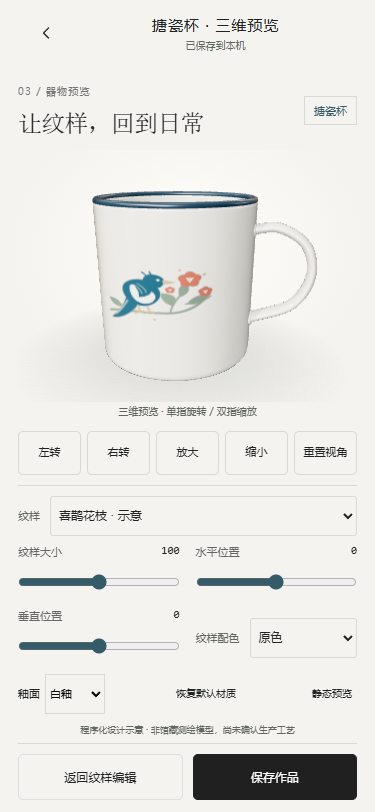
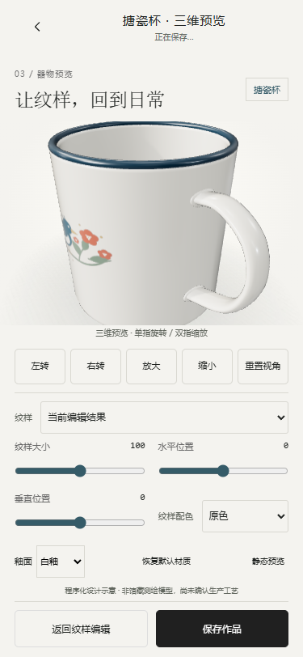

2026-10-30。在原生H5中增加 #cup 预览路由，保留首页、灵感输入、二维编辑、历史及本地数据库。仅开发杯子，不开发其他三维器型，不部署。开始前已复核项目/父目录无 AGENTS.md，读取现有实现与《物之再生_Codex开发目录与首页素材规范》。
运行原型 · 浏览器测试记录 · 73项测试 · 语法检查 · 构建记录
首页「开始共创」→灵感输入「继续编辑」→二维编辑「查看3D搪瓷杯」。直接访问 #cup 时无草稿会回到我的。旧版非搪瓷草稿的三维入口显示待接入，不强行套用杯子。
项目内未找到杯子GLB或模型授权记录，因此使用本轮原创程序化几何。几何源文件可编辑，不依赖外部模型下载。它是常见搪瓷杯形态的设计示意，不对应中华珐琅厂具体藏品，不是馆藏扫描/测绘，也没有已确认的尺寸、壁厚或量产工艺。页面保留这一说明。真实馆藏摄影、馆藏模型、工厂授权及生产参数仍需人工提供与确认。
沿用本地 Three.js 0.186.1；几何与纹理处理参考官方 LatheGeometry、Texture 文档，并检查当前依赖源码。HTMLImage纹理使用sRGB和flipY=true；测试图上UP、DOWN、L→R均方向正确。
| 文件 | 用途 |
|---|---|
| source/cup-geometry.mjs source/cup3d.js | 程序化几何、UV、渲染器、触摸、相机、材质、贴图更新与资源释放 |
| prototype/cup-view.js prototype/cup.css | 三维页面、实时参数、状态及静态降级界面 |
| prototype/app.js prototype/editor-views.js prototype/index.html | 复用编辑器入口，新增三维路由、返回/保存与脚本样式引用 |
| prototype/foundation.js prototype/model.js prototype/schema.d.ts | 杯子能力声明、相机/材质默认值、材质撤销与持久化类型 |
| scripts/build-cup.cjs package.json prototype/cup3d.js | 复用现有esbuild及Three依赖，构建本地三维运行包 |
| tests/cup.test.cjs scripts/qa-round05.cjs scripts/qa-round05-build.cjs | 几何/UV/相机/持久化自动测试和浏览器验收 |
| index.html 物之再生-H5-单文件.html | 更新离线构建产物，1,398,736 bytes；未上传 |
| README.md、使用说明.txt task_plan.md、findings.md、progress.md docs/round05-*、previews/round05-* | 本轮运行说明、验收记录与截图 |
测试环境：本机Headless Microsoft Edge，手机视口及触控事件模拟；不是iOS Safari/微信内置浏览器或实体手机。后者仍需真机补验。


390px · 320px · 430px · UV方向测试图（纯测试素材，不作为作品示例发布）
# 在本项目目录，已有8879服务时直接打开地址 $env:PORT='8879' npm start # http://127.0.0.1:8879/prototype/index.html#discover # 修改3D源码后先重新打包，再构建单文件 npm run build:cup npm run lint npm test npm run build
未接入真实AI、正式馆藏、云同步、云端发布、馆方积分与工厂服务。本轮没有新增官方承诺，没有上传GitHub。需要人工确认的事项：真实杯子参考与模型授权、制造尺寸与可印区/工艺，以及iOS/微信和低端Android真机表现。仅完成本轮，不继续下一轮。